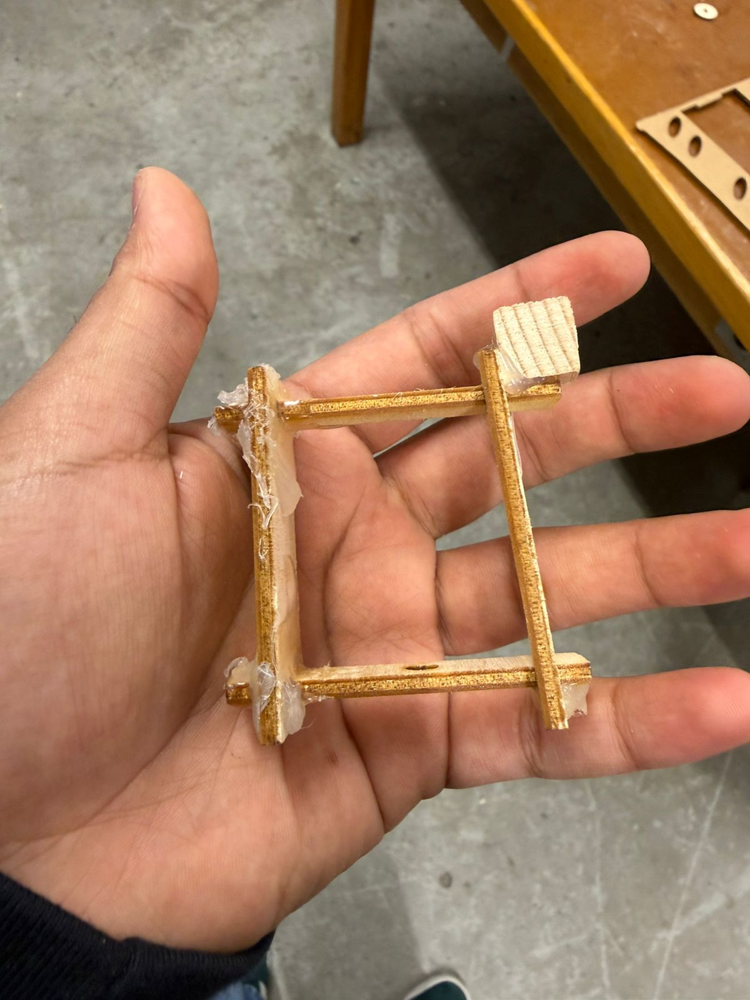
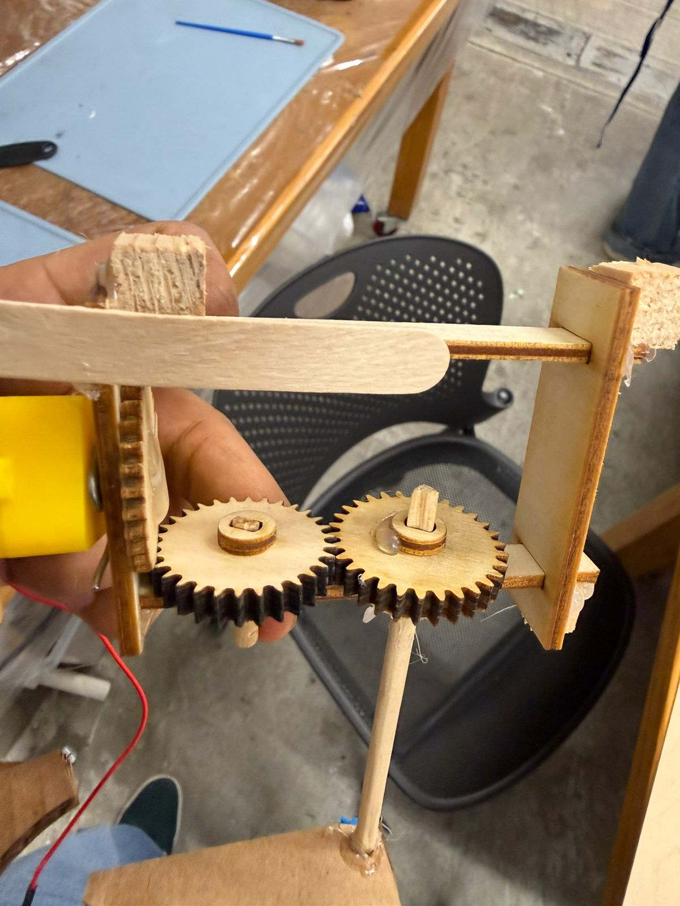
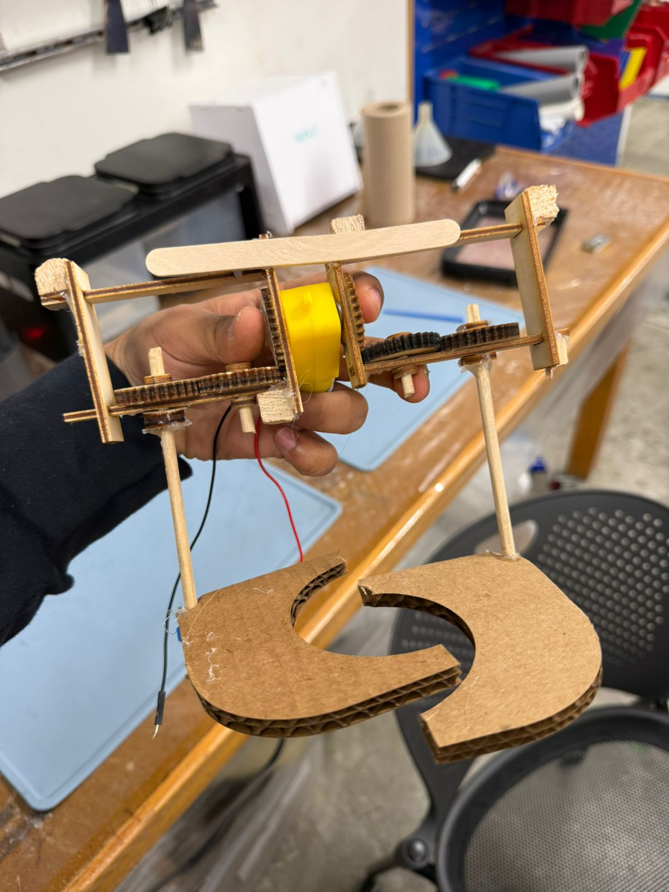
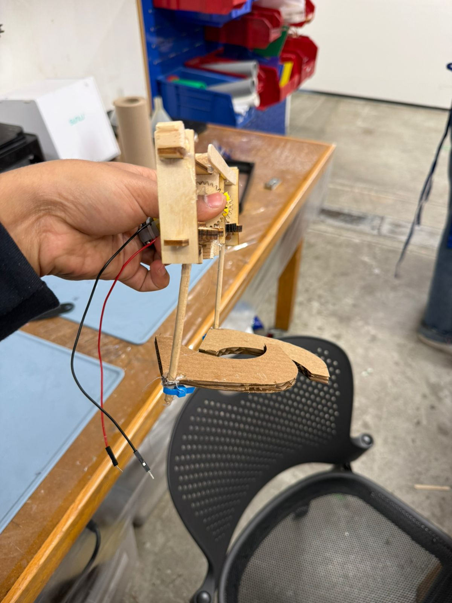
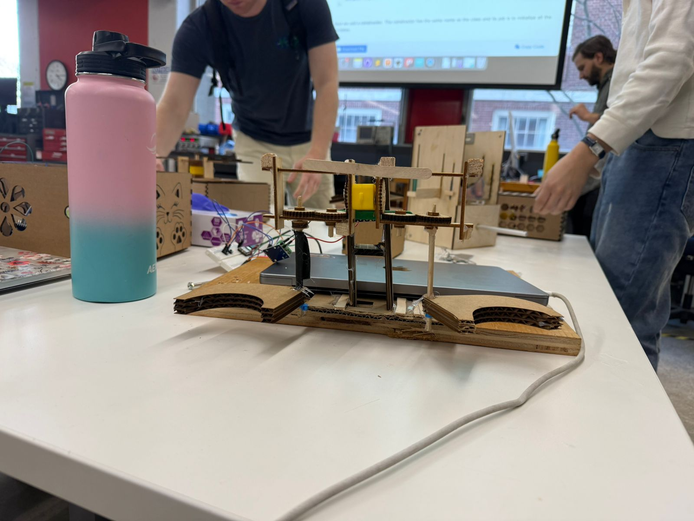
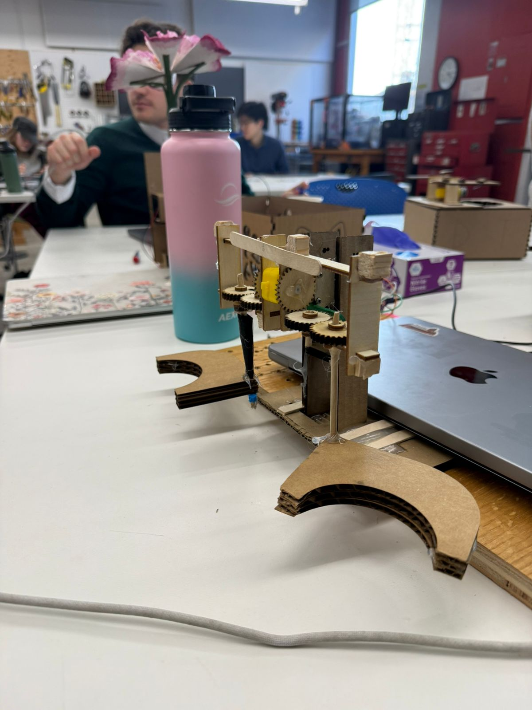
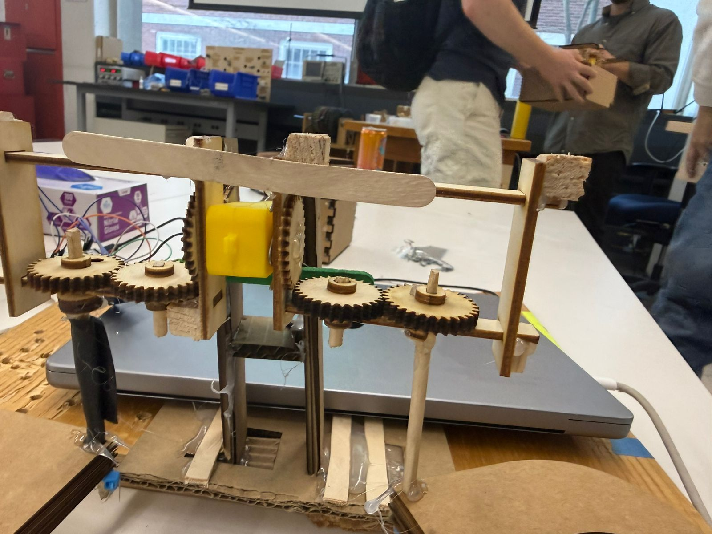

Project 03
I somewhat managed to build a claw-like pickup design.
For reference, I wanted the claw to first close around an object (here air), and then lift it up when the horizontal gears lock with each other. I think the extra friction of the spur gears kind of cause the jerky upwards movements when the claw is closing horizontally but having a heavier claw did make them bearable as you can see below. I wanted the vertical rotation to be larger, i.e. have the closed claw to do 225ish degrees of movement to drop the ball behind itself. My motor connectors were a little too short so this movement was limited to around 120 degrees. I want to fix this for next week. I was too focused on just getting the gearbox connected which being free-moving around the axle to allow for the vertical movement, so didn't get time to go back and fix its length for increased rotation.
Video · If the embed fails, watch on YouTube: Open video
The first photo is the dismantled version of the very first gear box setup. I realized that having just 1 spur gear horizontally misaligns the closing of the claw and it moving up. So had to add additional gears. Fixed that and some sizing issues in the second iteration right next to it. I cut out these small wooden blocks to add as custom brackets to enforce (somewhat) right angled and firm joints. Further used laser cut and then sanded down stoppers to secure the horizontal gears in place. Had to use all of the small filing tools in the woodworking area but it was fun.
In the 3rd image you can see the mechanism around the motor. At this point, the claw weight was too little and friction too high so the claws almost always closed after lifting up. Bobby and Victor's suggestions helped a lot here. Building a semi-reliable motor stand, increasing claw weight, and adjusting the spur gear fittings helped a bunch.
On spur gears, I kinda knew that they work in this orientation because I have unrelatedly tried them like this before. I knew it is janky but was very happy to give it a shot. Took around 2-3 gear prints but it worked out. Also felt happy about the having thinner gear vertically and thicker horizontally ideas. Was somewhat enforced by the size of the axle but I think that also helped make it work. For the gears, I used the Spur Gears Free Trial plug-in so that I could convert circles into gears. Couldn't figure out how to do that with the one recommended in the course.







For the stand, I laser some acrylic connectors that I screw on to the motor with M2s. Then I mounted those on a cardboard stand. For the coming week, I want this structure to be more solid so that I can reliably start picking up balls.
Finally, I spun up a simple circuit and arduino code such that the motor moves clockwise and anti-clockwise depending on the button pressed. It was very hard to comprehensively test the thing till the circuit and stand were assembled. So I only learnt that the model worked till I was already pretty deep in, so that was a big relief!
const int A1A = D0;
const int A1B = D1;
const int BTN1 = D2;
const int BTN2 = D3;
void setup() {
pinMode(A1A, OUTPUT);
pinMode(A1B, OUTPUT);
pinMode(BTN1, INPUT_PULLUP);
pinMode(BTN2, INPUT_PULLUP);
digitalWrite(A1A, LOW);
digitalWrite(A1B, LOW);
}
void loop() {
int b1 = digitalRead(BTN1);
int b2 = digitalRead(BTN2);
if (b1 == LOW && b2 == HIGH) {
// Direction 1
digitalWrite(A1A, HIGH);
digitalWrite(A1B, LOW);
}
else if (b2 == LOW && b1 == HIGH) {
// Direction 2
digitalWrite(A1A, LOW);
digitalWrite(A1B, HIGH);
}
else {
// Stop motor
digitalWrite(A1A, LOW);
digitalWrite(A1B, LOW);
}
}